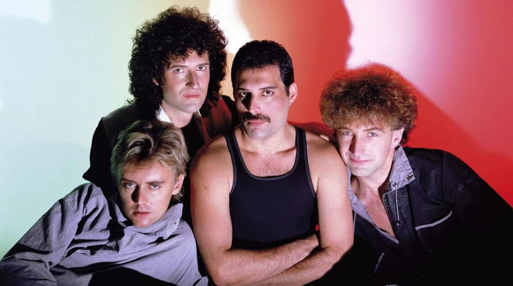
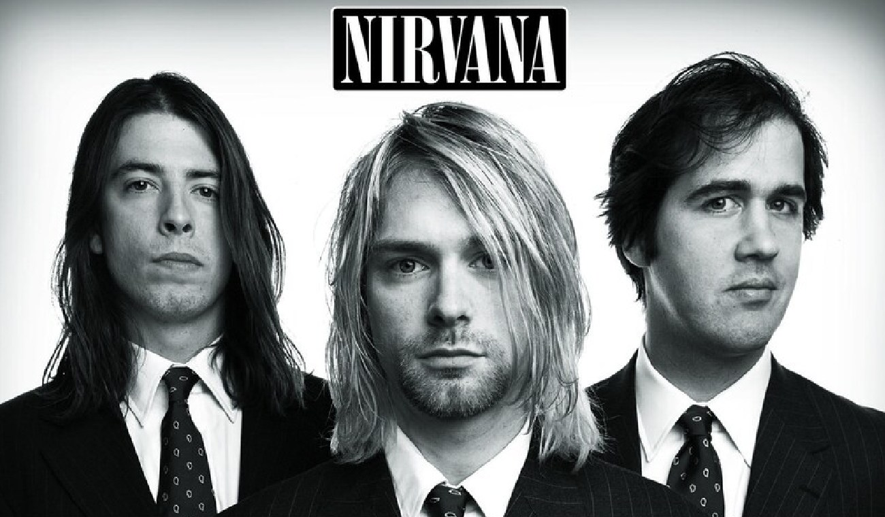
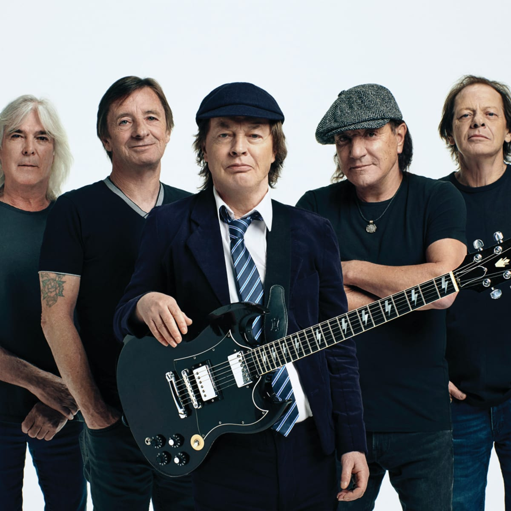

Al escuchar algunas bandas resulta claro que éstas no pasarán a la historia como sinónimos de singularidad, retrotrayéndonos a músicas y temas previamente escuchados hasta la saciedad.
Si al vampirismo sonoro le sumamos cierto talento compositivo, desarrollado en templadas, sofisticadas, sensitivas piezas pop de predominio acústico y placenteras melodías, con aquietados pasajes atmosféricos asistidos por líricas melancólicas pero optimistas reveladas con lacrimosa vocalidad, nos hallamos frente a uno de los grupos británicos más notorios de principios del siglo XXI, Coldplay, una banda con diáfanas referencias: desde Radiohead a Jeff Buckley, desde The Verve a Pink Floyd, pasando por Oasis, Belle & Sebastian, U2, Dave Matthews Band, Neil Young, The Beatles o Travis
Chris Martin-voz principal, teclado,piano,guitarra rítmica, armómica.
Will Champion – batería, coros, teclados, piano, percusión.
Nacimiento:Nacido el 31 de julio de 1978.
Guy Berryman – bajo, coros, teclados, sintetizadores, percusión.
Nacimiento:Nacido el 12 de abril de 1978.
Sellos discográficos:PARACHUTES,A RUSH OF BLOOD TO THE HEAD,X&Y,VIVA LA VIDA OR DEATH AND ALLA HIS FRIENDS,GHOST STORIES,A HEAD FULL OF DREAMS.
Nominaciones:Coldplay recibe 107 premios de 228 nominaciones. Ganan seis premios de catorce nominaciones a los Brit Awards y ganan el premio a Mejor grupo británico tres veces. Consiguen siete Grammys de veinte nominaciones. 2009 es su año más exitoso, en el cual ganan tres premios recibiendo siete nominaciones. Coldplay recibe ocho premios MTV. El video de la canción "The Scientist" gana todos los premios a los que es nominado en la edición de los premios MTV de 2003. Además ganan cinco premios Q y reciben el premio a mejor álbum por tres de sus seis discos.
Te presentamos uno de los tántos éxitos de está famosa Banda
The Scientist
QUEEN

BIOGRAFÍA
Banda de rock británica que gozó de gran fama desde mediados de los setenta y durante toda la década de los ochenta; la espectacularidad y dinamismo de sus actuaciones y la asimilación al rock de tendencias jazzísticas, sinfónicas y operísticas fueron algunas de las claves de su éxito, tan abrumador que sus discos fueron superventas incluso después del fallecimiento en 1991 de su líder, el cantante Freddie Mercury. Creado en 1970, el grupo estuvo formado por.
Freddie Mercury-voz.
Nacimiento: Nacida el 5 de septiembre de 1946.
Brian May-guitarra.
Nacimiento:Nacido en 1947.
Roger Taylor-batería.
Nacimiento:Nacido en 1949.
John Deacon-bajo.
Nacimiento:nacido en 1951.
Sellos discográficos:QUEEN, QUEEN II,SHEER HEART ATTACK,A NIGHT AT THE OPERA,A DAY AT THE RACES,NEWS OF THE WORLD,JAZZ,THE GAME,NET SPACE,THE WORKS,A KIND OFMAGIC,THE MIRACLE,INNUENDO, MADE IN HEAVEN.
Nominaciones:Queen ha tenido una presencia global en la cultura popular durante más de cinco décadas. Las estimaciones de sus ventas de discos oscilan entre 250 y 300 millones, lo que los convierte en uno de los artistas musicales con más ventas del mundo. En 1990, Queen recibió el Brit Award por su destacada contribución a la música británica. Fueron incluidos en el Salón de la Fama del Rock and Roll en 2001, y como cada miembro había compuesto sencillos exitosos, los cuatro fueron incluidos en el Salón de la Fama de los Compositores en 2003. En 2005 recibieron el Premio Ivor Novello a la Colección de Canciones Destacadas de la British Academy of Songwriters, Composers and Authors, y en 2018 recibieron el premio Grammy Lifetime Achievement Award.
Te presentamos uno de los tántos éxitos de está famosa Banda
Bohemian Rhapsody
NIRVANA

BIOGRAFÍA
Nirvana fue una banda estadounidense de grunge, formada en 1987 por el cantante/guitarrista Kurt Cobain y el bajista Krist Novoselic en Aberdeen, Washington. La banda pasó por una serie de diferentes bateristas y finalmente se establecieron con Dave Grohl, quien se unió a la banda en 1990. Nirvana publicó tres álbumes de estudio: Bleach en 1989, Nevermind en 1991 y In Utero en 1993. El primer álbum fue lanzado por el sello discográfico independiente Sub Pop, mientras que los otros dos álbumes fueron lanzados por DGC Records.
Kurt Cobain-guitarra principal, voz.
Nacimiento:Nacido en 20 de febrero de 1967.
Dave Grohl-voz, bateria, guitarra.
Nacimiento:Nacido el 14 de enero de 1969.
Krist Anthony-bajista.
Nacimiento:Nacido 16 de mayo de 1965.
Sellos discográficos:NERVEMIND, SMELLS LIKE TEEN SPIRIT IN UTERO,ALL APOLOGIS.
Nominaciones:La banda ha recibido varios premios y nominaciones desde 1992, incluyendo nominaciones por artista nuevo de Heavy metal/Hard rock favorito en los American Music Awards, mejor álbum de música alternativa por Nevermind en los Premios Grammy y vídeo del año y elección de los televidentes por «Smells Like Teen Spirit» en los MTV Video Music Awards. Sin embargo recibieron los premios de mejor vídeo alternativo y mejor artista nuevo en los MTV Video Music Awards en el mismo año. La canción «Smells Like Teen Spirit» también fue nominada por mejor canción de rock en los Premios Grammy de 1993, perdiendo contra «Layla» de Eric Clapton, cosa que no pasó desapercibida y disgustó a algunos críticos.1 Después de recibir cinco nominaciones a los Premios Grammy sin ganar ninguna de ellas, la banda finalmente recibió el premio al mejor álbum de música alternativa por MTV Unplugged in New York en 1996. En total, Nirvana ha recibido nueve premios de veinticuatro nominaciones.
Te presentamos uno de los tántos éxitos de está famosa Banda
Smells Like Teen Spirit
ACDC

BIOGRAFÍA
AC/DC es una banda de hard rock británica-australiana, formada en 1973 en Australia por los hermanos escoceses Malcolm Young y Angus Young. Sus álbumes se han vendido en un total estimado de 200 millones de copias. embarcándose en giras multitudinarias por todo el mundo y sus éxitos han musicalizado varias producciones cinematográficas sobresalientes. Son famosas sus actuaciones en vivo, resultando vibrantes y exultantes espectáculos de primer orden. Mucho de ello se debe al extravagante estilo de su guitarrista principal y símbolo visual, Angus Young, quien asume el rol de guitarrista principal durante los conciertos, gracias a sus dinámicos y adrenalínicos despliegues escénicos uniformado de colegial callejero. Al comienzo, los conciertos y tiempos por los cuales sufrieron diversos cambios en su alineación.
Angus Young
Nacimiento:Nacido el 31 de marzo de 1955.
Stevie Young
Nacimiento:Nacido el 11 de diciembre de 1956.
Brian Johnson
Nacimiento:Nacido el 5 de octubre de 1947.
Cliff Williams
Nacimiento:Nacido el 14 de diciembre de 1949.
Phil Rudd
Nacimiento:Nacido el 19 de mayo de 1954.
Sellos discográficos:AC/DC LET THERE BE ROCK,WHO MADE WHO,FLY ON THE WALL.
Nominaciones:Con cuatro décadas de trayectoria, la banda ha superado los cambios en la alineación, la pérdida de históricos miembros, la controversia sobre su imagen y letras, y el constante cambio de las tendencias musicales, para convertirse en la actualidad en una de las bandas más importantes e influyentes de la historia y con mayor capacidad de convocatoria. Hasta la fecha son una de las bandas más taquilleras de todos los tiempos. Desde marzo de 2003, el grupo está incluido en el Salón de la Fama del Rock and Roll. Aunque están comúnmente clasificados como hard rock, y considerados uno de los grandes influyentes del heavy metal, siempre han clasificado su música simplemente como rock and roll.
Te presentamos uno de los tántos éxitos de está famosa Banda
Thunderstruck
SYSTEM OF DOWN
BIOGRAFÍA
Son conocidos por realizar canciones en cuyas letras se manifiestan en contra del maltrato infantil, la violencia, la guerra, los genocidios, la pornografía, el machismo, el predominio del consumismo en la sociedad, las desigualdades sociales, físicas e ideológicas, la intolerancia o la discriminación, entre otros. Esta fórmula social y musical le ha acarreado, desde la publicación de su primer álbum en 1998, buenos resultados ante el público, que hizo de System of a Down un disco de platino.
Es la primera banda desde The Beatles que ha alcanzado dos veces la cima de ventas de álbumes en Estados Unidos en el mismo año, con Mezmerize e Hypnotize, en el año 2005. System of a Down ha vendido más de 40 millones de discos en todo el mundo.
Serj Tankian-composición, voz, teclado y ocasionalmente guitarra.
Nacimiento:Nacido el 21 de agosto de 1967.
Daron Malakian-composición, guitarra y voz.
Nacimiento:Nacido el 18 de julio de 1975.
Shavo Odadjian-bajo.
Nacimiento:Nacido el 22 de abril de 1974.
John Dolmayan-batería.
Nacimiento:Nacido el 15 de julio de 1973.
Sellos discográficos:SYSTEM OF DOWN, TOXICITY, STESL THIS ALBUM!,MEZMERIZE, HYPNOTIZE.
Nominaciones:System of a Down ha sido nominado para cuatro premios Grammy, de los cuales ha ganado uno en 2006 a la mejor Interpretación de hard rock por la canción B.Y.O.B. La banda también ha sido nominado para varios Kerrang! y los premios MTV.
Te presentamos uno de los tántos éxitos de está famosa Banda